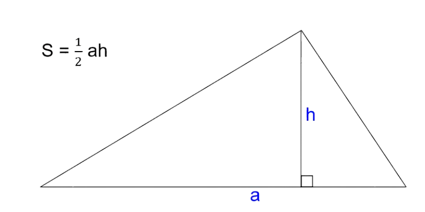
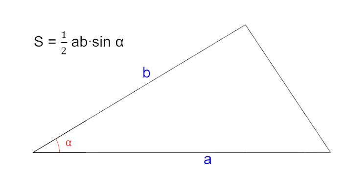
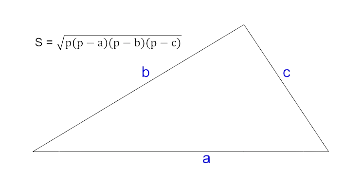
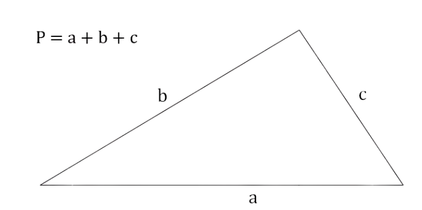
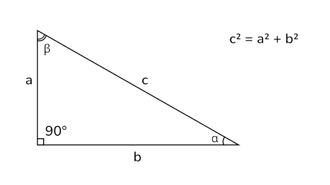
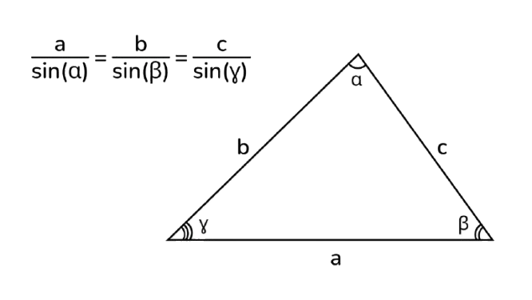
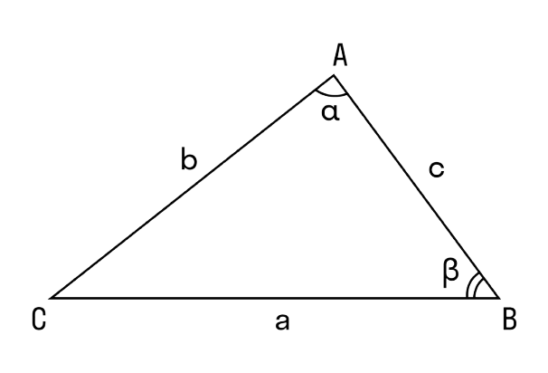
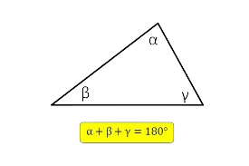
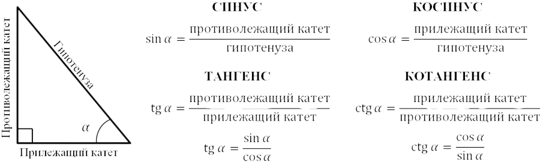

-

-
Через основание (a) и высоту (h), проведенную к этому основанию:
S = 1/2 * a * h -
Через две стороны (a, b) и угол между ними (a):
S = 1/2 * a * b * sin(a) -
Формула Герона (через полупериметр p и стороны a, b, c):
p = (a + b + c) / 2
S = √(p * (p - a) * (p - b) * (p - c))


-

- Сумма длин всех сторон:
P = a + b + c
-

- Где a и b - катеты, c - гипотенуза
-

-

a2 = b2 + c2 - 2 * b * c * cos(a)
b2 = a2 + c2 - 2 * a * c * cos(b)
c2 = a2 + b2 - 2 * a * b * cos(y)
-

-

- Пример решения задач:
Условие:
В треугольнике ABC известны: сторона AB = 5 см, сторона BC = 8 см и угол между ними ABC = 60°. Найдите площадь треугольника ABC и сторону AC.
Решение (для просмотра навидите курсором):
1) Находим площадь треугольника:
Используем формулу площади через две стороны и угол между ними:
S = 1/2 * AB * BC * sin(ABC)
S = 1/2 * 5 * 8 * sin(60°)
S = 20 * (√3 / 2)
S = 10√3 см2
2) Находим сторону AC: Используем теорему косинусов:
AC2 = AB2 + BC2 - 2 * AB * BC * cos(ABC)
AC2 = 52 + 82 - 2 * 5 * 8 * cos(60°)
AC2 = 25 + 64 - 80 * (1/2)
AC2 = 89 - 40
AC2 = 49
AC = √49
AC = 7 см
-
Ответ:
Площадь треугольника ABC равна 10√3 см2, сторона AC равна 7 см.